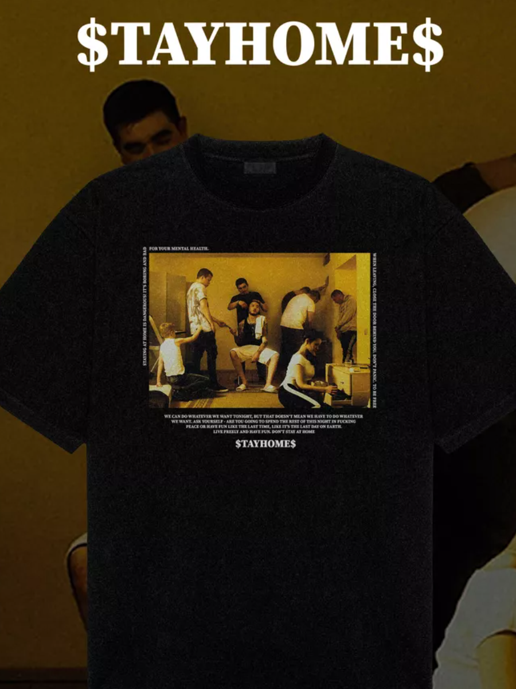
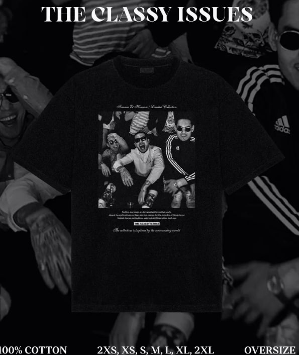
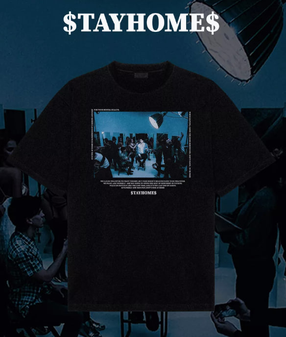
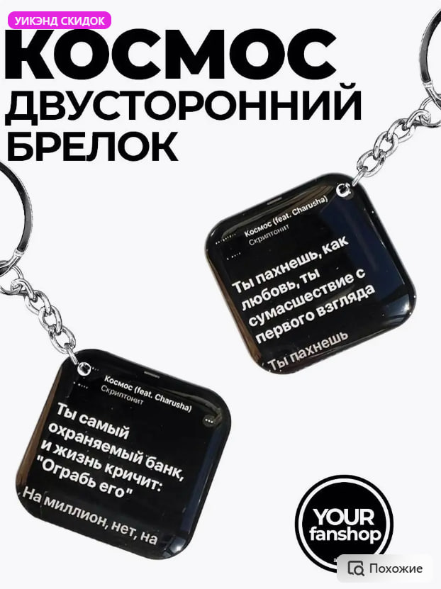
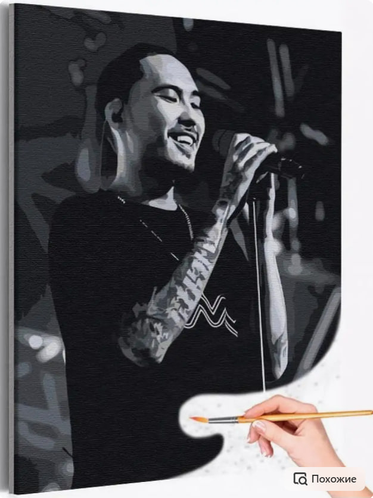
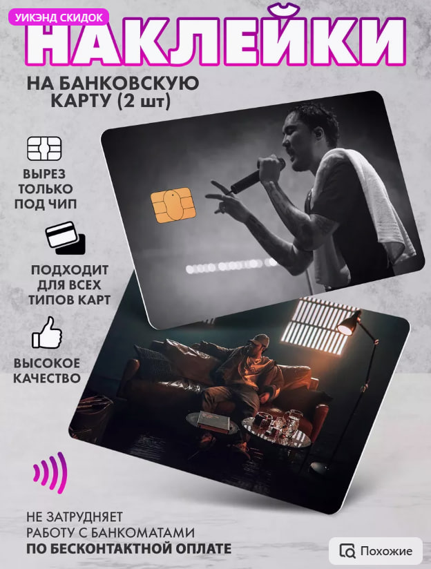

Впервые громко заявил о себе в 2013 году видеоклипом на песню «VBVVCTND», спустя полтора года выпустил свой дебютный альбом «Дом с нормальными явлениями», который стал одним из самых удачных русскоязычных рэп-альбомов 2015 года.
В 2018 году разделил своё творчество на два проекта: Скриптонит и Gruppa Skryptonite
ТОВАРЫ

СКРИПТОНИТ/футболка
Футболка оверсайз-вещь унисекс. Благодаря oversize крою в свободной посадке и удлиненному фасону, она станет любимым элементом в гардеробе.
1799 руб.

СКРИПТОНИТ/футболка
Футболка оверсайз-вещь унисекс. Благодаря oversize крою в свободной посадке и удлиненному фасону, она станет любимым элементом в гардеробе.
1799 руб.

СКРИПТОНИТ/футболка
Футболка оверсайз-вещь унисекс. Благодаря oversize крою в свободной посадке и удлиненному фасону, она станет любимым элементом в гардеробе.
1799 руб.

СКРИПТОНИТ/Брелок Это Любовь
Брелок из эпоксидной смолы Скриптонит - классный и приятный подарок на любой праздник! Брелок отлично смотрится на рюкзаке, ключах от машины, ключах от дома.В нашем ассортименте также присутствуют 3D наклейки: наклейки на телефон.
899 руб.

СКРИПТОНИТ/Живопись по номерам
Картина по номерам Скриптонит на сцене Раскраска картина по номерам на холсте 40х50 AAAA-RS800 содержит в наборе: холст на деревянной рамке, с нанесенными контурами рисунка, пронумерованные акриловые краски, не требующие смешивания, кисти.
3499 руб.

СКРИПТОНИТ/футболка
Наклейки на банковскую карту - отличный способ порадовать себя, своих друзей и близких, а также преобразить привычный скучный дизайн карты на яркий и запоминающийся с изображением Ваших любимых героев или мемов. Наклейка на банковскую карту с дизайном рэп хип-хоп Скриптонит подходит для передней и задней стороны карточки.
1799 руб.
ОТВЕЧАЮ НА ТВОИ ВОПРОСЫ
Как заказать мерч?
1. Вы можете ознакомиться со списком товаров в этом сообществе в разделе "Каталог"
2. Если вам что-то понравилось и вы хотите заказать, то вы пишите мне на личную страницу https://t.me/Apeiiin
ЛС у меня открыто, и я не кусаюсь
3. Далее мы с вами уже в личных сообщениях обсуждаем все ньюансы такие как:
доставка
колличество мерча
какой именно мерч вам нужен
и проч.
4. Оплату за мерч я беру пред отправкой, после того как вы написали и подтвердили свой заказ, потому что леший его знает мало ли какие делишки проворачиваются на почте.
5. В случае утери заказа почтой (или их воровства) есть две опции:
Я отправлю вам этот мерч заново, бесплатно, но(!) с оплатой доставки
Я верну вам деньги за мерч
Как не ошибиться с размером?
Чтобы не ошибиться с размером одежды, можно воспользоваться следующими рекомендациями:
1.Узнайте свои параметры в сантиметрах. Основные параметры, которые нужно знать: обхват груди, талии и бёдер, длина рукава, ширина плеч между швами, длина штанин по внутреннему шву, длина стельки обуви.
2.Пользуйтесь специальными приложениями. Например, EyeFitU, True Fit или MTailor.
3.Обращайте внимание на линию плеч. В большинстве случаев плечевой шов должен строго соответствовать вашим параметрам и проходить ровно на уровне подмышечной впадины.
4.Выбирайте правильную длину. Так, рукава должны быть не слишком короткими и не слишком длинными, в идеале — закрывать запястье или на сантиметр длиннее.
5.Аккуратнее с оверсайзом. В некоторых случаях он может стройнить и создавать нужный силуэт, а в других — искажать пропорции, добавлять ненужный объём и прочее.
Из чего сделана одежда?
Футболка с принтом создана из качественного 100% хлопка повышенной плотности 200 грм. Также наша шмотка с картинкой выполнена высококачественной печатью с детальным прокрасом ткани.
Сколько ждать заказ?
Для получения точной даты и получения заказа нужно будет предъявить паспорт.
Совет для отправлений по России: Получайте отправления без документов — паспорта и извещения, по СМС-коду. Для этого придите в отделение Почты России с паспортом и заполните анкету или подключите услугу дистанционно с помощью учетной записи ГосУслуг.
Отследить посылку по России:
1.на сайте Почты России https://www.pochta.ru/old-tracking
2.в приложении "Почта России" для iPhone / Android
Можно вернуть, если мне не подошло?
Да, конечно. Но есть нюансы:
1.Напишите в нашу поддержку и сфотографируйте товар с каждой стороны , чтобы мы убедились , что товар без брака.
2.Товар можно вернуть в течении 14 дней.
3.После того, как товар вернется на склад и мы убедимся в целостности товара, мы вернем ваши средства на карту.
Сколько стоит доставка?
Все зависит в какой город поедет ваш заказ. Вы можете выбрать способ доставки: Почта России, СДЭК, Яндекс доставка.